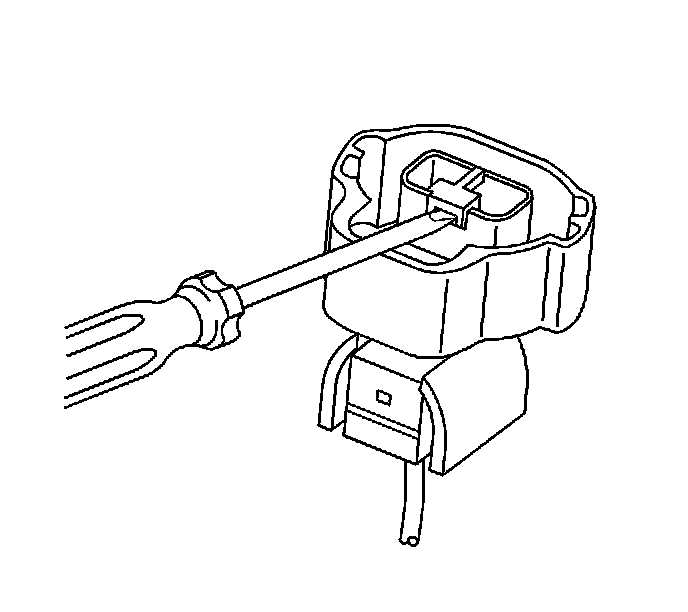
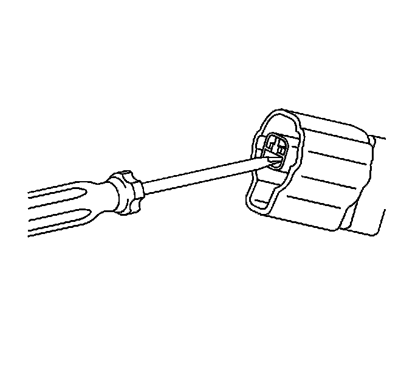
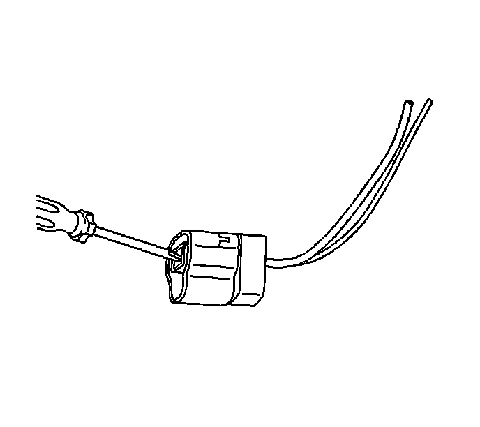

Yazaki Connectors (2-Way)
Yazaki Connectors (2-Way)
Tools Required
J-38125 Terminal Repair Kit
Terminal Removal Procedure
1. Disconnect the connector from the component.

2. Insert a small flat-blade tool in the slot below the front loaded terminal position assurance (TPA) and pry up.
3. Remove the TPA by pulling it out of the connector.
4. Push the wire side of the terminal that is being removed toward the connector and hold it in position.

5. Insert the J 38125-553 (GM P/N 15315247) on a slight upward angle into the cavity below the terminal to be removed. Ensure that the pointed on the end of the tool is facing the bottom of the terminal and it stays in contact with the terminal until it stops on the plastic terminal retainer. See the release tool cross reference in the Reference Guide of the J-38125 to ensure that the correct release tool is used.

6. Gently pry the plastic terminal retainer down and carefully pull the terminal out of the connector. Always remember never use force when pulling a terminal out of a connector. If the terminal is difficult to remove, repeat the entire procedure.
Terminal Repair Procedure
Use the appropriate terminal and follow the instructions in the J-38125 .